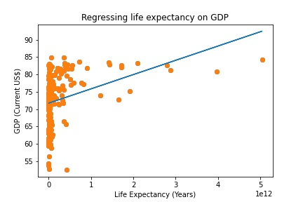
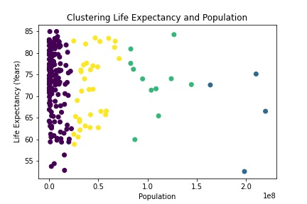

The Line Chart below illustrates the progression of interest rates faced by consumers, in terms of mortgage rates and credit card rates.
The second chart conveys drug deaths in Scotland, ordered by what type of substance was responsible for the fatality.
Below I have amended the Financial Times chart to incorporate global GDP
Although the original IMF chart may suggest investing in 2022 is the 'riskiest' option, setting this funding as a percentage of global GDP, as illustrated by Chart 2, shows that 1984 was the 'riskiest' time to invest.
The Chart above illustrates the progession of both the Pound to Dollar Exchange Rate, and the Pound to Euro Exchange Rate, from 2007 to 2022.
The Chart above has been modified to have a visual coding of 'color' rather than 'column'. I changed the visual encoding as the modified chart allows easier comparison between the different exchange rates.
Click the link here to view the code behind the scraper.
This website served as a good website to scrape data from as it had a clear embedded table and no restrictive code preventing scrapers.
Click the link here to view the code behind the scraper.
The Map below illustrates Germany by district.
The Map below illustrates health expenditure by region in Germany in 2020.
Observing the map above, the North-East of Germany appears to spend the least on health, whereas 'Nordrhein-Westfalen' spends markedly more than any other region.
Attending the Festival of Economics: "What Next for Central Banks?", a key argument made was that the UK is experiencing unemployment rates at a level not seen since the 1970s, and has reached a Debt:GDP ratio of 100%.
The Map below conveys the Unemployment Rate in the UK from 1971-2022.
The Map below illustrates the Debt:GDP ratio for the UK, 1950-2020.
This aforementioned argument is clealry corroborated by both graphs above. Simple observation from the first graph conveys how the UK is at unemployment levels around 4%, similar to that of the 1970s. Liekwise the second graph demonstrates that the UK has reached a debt:gdp ratio of 100% as of 2020.
The chart below regresses Medical Graduates on Capital Expenditure, indicating a slight positive correlation
The Bubble chart below illustrates GDP vs life expectancy, with the size of the bubbles corresponding to population size.
Hypothesis: Using supervised machine learning run a regression of life expectancy on GDP to predict relationship. I expect a postive relationship.
Click the link here to view the code behind the regression.
Results: There appears to be a positive relationship between GDP and life expectancy.
Hypothesis: Using unsupervised machine learning, countries can be clustered into 4 groups based on their populations and life expectancy.I expect the clusters to illustrate that life expectancy does not depend on population size.
Click the link here to view the code behind the cluster.
Results: Population size appears to have no basis on life expectancy.